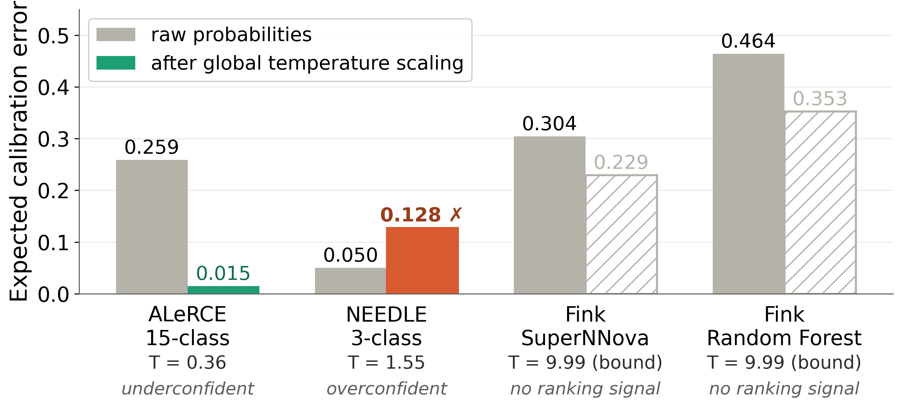
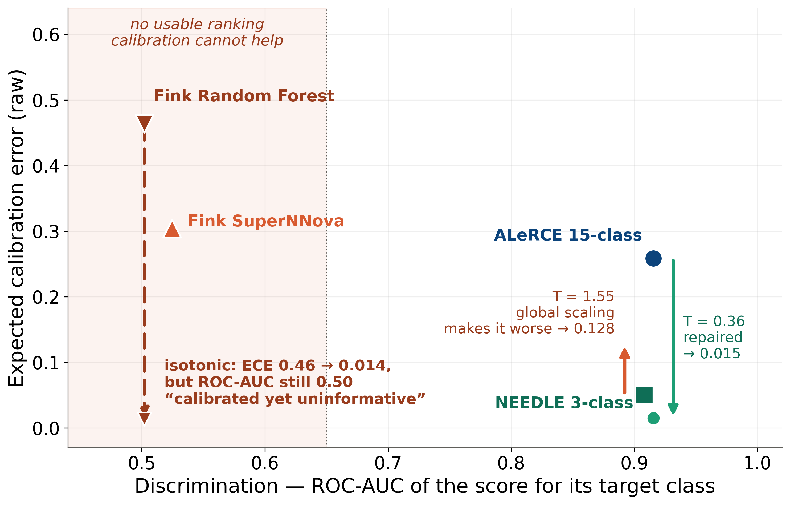
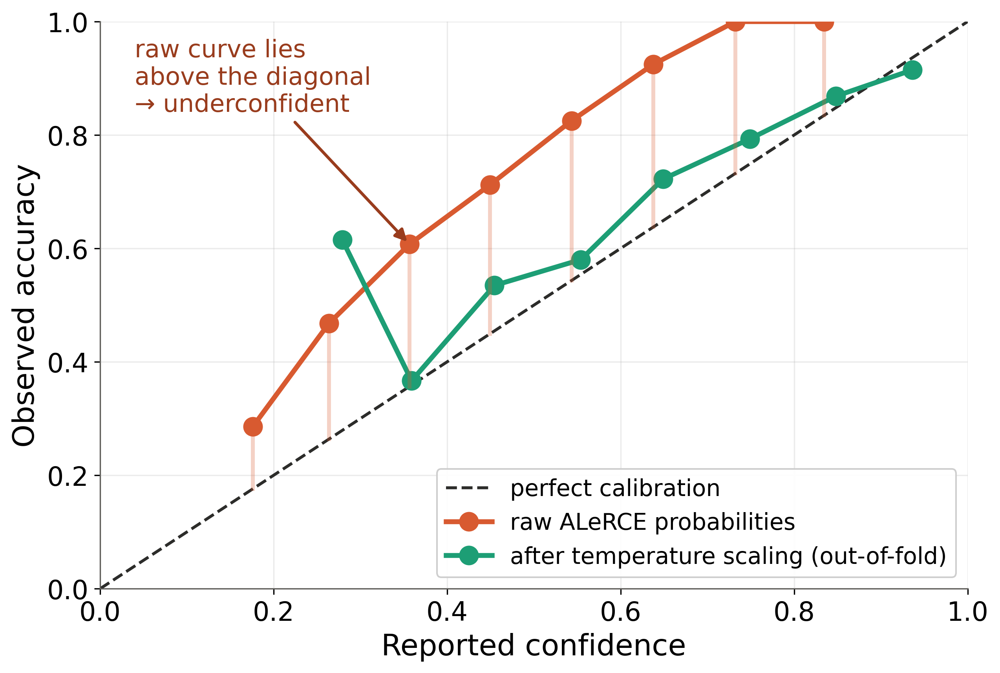
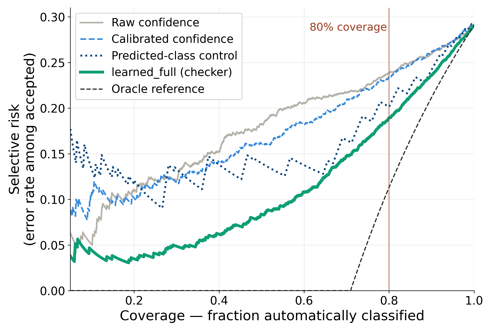

1Motivation
- Rubin/LSST alert volumes cannot be inspected manually.
- A classifier can rank the correct class first while still reporting an unreliable confidence.
2Data & ground truth
Spectroscopically confirmed ZTF Bright Transient Survey objects, cross-matched against the production outputs of three brokers. BTS spectroscopy is the independent ground truth.
| Broker score | Task | N |
|---|---|---|
| ALeRCE light-curve RF | 15-class | 1,576 |
| NEEDLE | 3-class | 429 |
| Fink SuperNNova / RF | binary SNIa | 1,368 |
ALeRCE class counts and accuracy
Overall ALeRCE accuracy 70.9%, but strongly class-dependent — SNII is the classification bottleneck.
3Method
Five-fold out-of-fold evaluation · paired stratified bootstrap · ROC-AUC, AURC and risk–coverage. Deferral means more photometry, a second broker or human review — not automatically spectroscopy.
4Three brokers, three failure modes

The same global correction behaves differently for every system. ALeRCE is strongly underconfident (T < 1) and is repaired. NEEDLE starts best in aggregate but is overconfident, and the identical procedure makes it worse. For Fink, T runs to the optimiser bound — hatched bars mark a nominal drop that is not a usable gain.
…and not even uniformly within one broker
Per-class ALeRCE ECE. SNIa and SNIbc are repaired; SNII degrades — the aggregate improves while one class gets worse, motivating class-conditional calibration.
5Results — repairing and using the ALeRCE scale
Aggregate calibration
Fixed gate p ≥ 0.8
Checker ranking
At 80% auto-accept
Calibration only helps a score that already ranks

Fink RF reaches ECE 0.014 under isotonic regression while its ROC-AUC stays at 0.50 — perfectly calibrated and completely uninformative. A low ECE is not a certificate of usefulness.
ALeRCE is systematically underconfident

Raw ALeRCE sits far above the diagonal — correct far more often than it claims. Temperature scaling pulls it onto the diagonal without changing any predicted label.
Selective classification

| Policy @ 80% coverage | Acc. | Errors caught |
|---|---|---|
| Raw confidence | 76.2% | 34.5% |
| Predicted-class control | 79.9% | 44.5% |
| Checker (full vector) | 81.0% | 47.8% |
The checker beats class identity alone
Δ = +0.083 over the class-rate control, paired-bootstrap 95% CI [0.057, 0.107] — object-level reliability beyond class identity. The shape-only model does not clear the control: the signal is in the full 15-class vector.